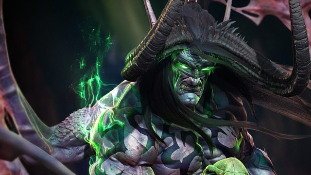
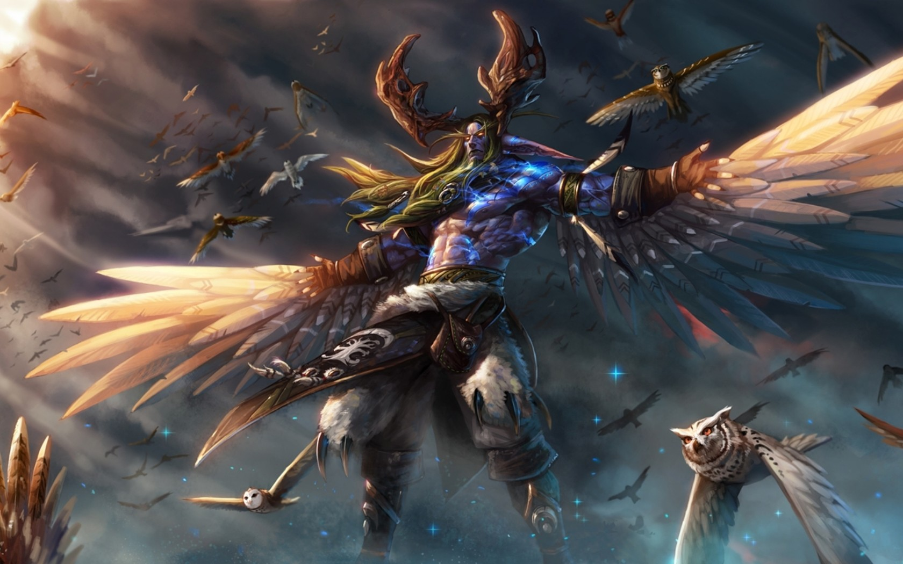

Illidan Hurlorage est le frère jumeau de Malfurion Hurlorage. Les deux frères grandirent aux
côtés de leur amie Tyrande Murmevent, avant la Grande Fracture. Étudiant la magie avec son
frère, Illidan manquait de patience pour être initié aux subtilités des arts druidiques et
il s'avéra être un piètre disciple, malgré les enseignements du demi-dieu Cénarius. Il se
tourna finalement vers les arts arcaniques que son frère avait dédaigné. En revanche, Illidan
était doué pour la pratique des magies des arcanes, qui était encore d'une importance primordiale
à cette époque pour la communauté des Elfes de la nuit. Mais ce talent pour la magie n'était
guère encourageant, car il était né avec les yeux ambrés, chose assez rare chez les Elfes
de la nuit.

Les
yeux ambrés étaient considérés comme un signe de grandeur future, et pourtant Illidan ne
semblait pas faire preuve de capacités sortant de l'ordinaire. Il ne se découragea cependant
pas et continua à étudier la magie. Fasciné par les énergies magiques, il maîtrisa des sorts
de difficulté croissante, mais à son grand désespoir, la Garde de la Lune, institution de
prestige, ne lui proposa jamais d'intégrer ses rangs.
Malgré cela, Illidan était
toujours déterminé à devenir le héros que son peuple attendait qu'il devienne. Il trouva
rapidement une motivation additionnelle pour atteindre la gloire. Un jour, pendant un festival,
il aperçu Tyrande dansant parmi la foule et se rendit compte qu'il éprouvait depuis longtemps
un amour profond pour elle. Avec le temps, il était tombé amoureux de sa bonté, de son rire,
de sa beauté et de sa foi.
Sa joie n'était assombrie que par le fait que Malfurion,
lui aussi, avait des sentiments pour Tyrande, même s'il fut plus lent à les admettre. Illidan
se doutait que Tyrande finirait par choisir son compagnon parmi les deux frères et que son
cœur irait à celui des jumeaux qui arriverait à se faire valoir le plus à ses yeux. Illidan
redoubla d'efforts dans l'étude des énergies magiques et fut transporté de joie le jour où,
tant par chance que par rapidité d'action, il sauva la vie du seigneur Lord Kur'talos Crête-du-corbeau.
Le noble, reconnaissant, fit d'Illidan son sorcier personnel et plaça beaucoup d'espoir dans
le courage et les talents de son protégé.
Durant la guerre des anciens, Crête-du-corbeau assembla une armée d'elfes de la nuit afin de
combattre les envahisseurs démons. Lorsque Latosius, le chef de la Garde de la Lune, fut
tué en plein combat, Illidan sauta sur l'occasion. Il prit la tête des sorciers survivants
et dirigea leurs pouvoirs conjugués. Il fit preuve d'une grande efficacité et fit des ravages
parmi les forces de la Légion, mais cela ne suffisait pas. Des renforts affluaient sans cesse
du Néant distordu et la guerre tournait à l'avantage des démons. Pendant cette bataille,
il fut confronté à un puissant Démon du nom d'Azzinoth, qu'il vainquit et dont il s'appropria
les armes gangrenées connues aujourd'hui sous le nom de Glaives de guerre d'Azzinoth. C'est
à ce moment critique que Malfurion décida de désobéir aux ordres de Crête-du-corbeau et de
déserter l'armée des elfes de la nuit. Il s'embarqua dans un périlleux voyage, en espérant
retrouver les grands dragons pour demander leur aide. Sentant sa chance venir, Illidan alla
voir Tyrande et lui déclara qu'il ne pouvait plus continuer à se taire. Il lui avoua son
amour et soutint que Malfurion avait clairement perdu la raison en suivant la voie du druidisme.
Inquiète pour Malfurion, Tyrande rejeta Illidan, qui comprit qu'il s'était déclaré
trop tard. Elle avait déjà choisi son promis, et ce n'était pas lui. Une fois de plus, Malfurion
avait réussi sans effort là où Illidan n'avait pu éviter l'échec. Et cette défaite avait
un goût particulièrement amer, car Malfurion n'avait pas encore reconnu son propre amour
envers Tyrande.
La douleur engendrée par ces sentiments non réciproques hanta Illidan
et son esprit fut envahi par la tristesse et la jalousie. Il ne pouvait se douter que ces
idées noires étaient alimentées par l'influence du seigneur Xavius, un satyre, autrefois
Elfe de la Nuit, capable de propager la corruption. Illidan finit par déserter lui aussi
l'armée des Elfes de la nuit mais il choisit une mission bien différente. Il alla trouver
Sargeras, le créateur et maître de la Légion ardente.
Illidan jura allégeance au
funeste Titan, et fit un marché avec lui. Il lui donnerait ses précieux yeux dorés en échange
de pouvoirs incommensurables. Sargeras réduit les yeux d'Illidan en poussière et dota ses
orbites brûlées d'une vue améliorée. Il lui fit également don d'un tatouage très élaboré,
recouvrant la quasi-totalité son corps et chargé de puissantes énergies magiques. 
Ce soudain changement
de camp valut à Illidan le surnom de Traître. Pourtant, bien qu'il ait effectivement aidé
la Légion ardente, il finit par se ranger du côté de Malfurion et du reste des elfes de la
nuit. Avec Malfurion, ils refermèrent la porte que les Bien-nés du palais avaient ouverte
dans le Puits d'éternité, empêchant ainsi Sargeras d'atteindre Azeroth, un évènement qui
aurait signifié la fin du monde. Peu après que le portail ait été refermé, un groupe de Bien-nés
se rebella contre la Légion et, conduits par Dath'Remar Haut-soleil, rejoint l'armée principale
des elfes de la nuit.Azeroth avait été sauvée mais la magie du Puits avait été utilisée à
mauvais escient, ce qui finit par faire imploser le Puits et entraîner la séparation de l'ancienne
Kalimdor en plusieurs continents.
Un nouvel océan naquit et obligea les défenseurs
elfes de la nuit à fuir devant les vagues qui déferlaient. Une fois arrivés au mont Hyjal,
les elfes de la nuit purent se reposer : la montée des eaux avait atteint ses limites. Juste
avant que le Puits n'implose, Illidan avait pris la précaution de remplir quelques fioles
de ses eaux magiques. Persuadé qu'en dépit de la victoire des elfes de la nuit contre la
Légion ardente, les démons reviendraient un jour, il pensait, à bon escient, que les énergies
magiques seraient les seules à pouvoir sauver les elfes de la nuit lors d'une nouvelle invasion.
Il partit à la recherche d'un lac reculé au sommet du mont Hyjal et versa trois des fioles
dans ses eaux, modifiant le lac de façon irréversible et créant un second Puits d'éternité,
source d'un nouveau pouvoir.
Il pensait que ses semblables l'acclameraient en héros.
Il avait tort. Un petit groupe d'elfes de la nuit, comprenant quelques Bien-nés repentis,
découvrit les actes d'Illidan et tenta d'y mettre fin. Illidan, soupçonnant les Bien-nés
de vouloir usurper à nouveau les pouvoirs du Puits, se jeta sur eux. Malfurion arriva quelques
instants plus tard et prêta main-forte pour capturer son frère.
Comme Malfurion
avait fait preuve d'une grande sagesse pendant la guerre, il eut la responsabilité de fixer
le sort de son frère. Consterné par le pouvoir de son jumeau, il jugea qu'Illidan était trop
dangereux et impétueux pour qu'on le laisse en liberté. Mais même ainsi, Malfurion ne pouvait
le condamner à mort. À la place, il choisit pour Illidan un châtiment qui pouvait paraître
pire encore : la réclusion pour le reste de sa vie d'immortel. Ainsi, à la suite de la «pitié»
de Malfurion, Illidan passa plus de dix mille ans en isolation, enfermé dans une cellule
située profondément sous terre et surveillé par les Guetteuses et leur chef, Maiev Chantelombre.
"Un traître... En vérité, c'est moi qui ait été trahi. C'est moi que l'on pourchasse, c'est moi que l'on hait. Mes yeux aveugles voient ce que les autres ne peuvent voir. Que parfois, la main du destin, doit être forcée."